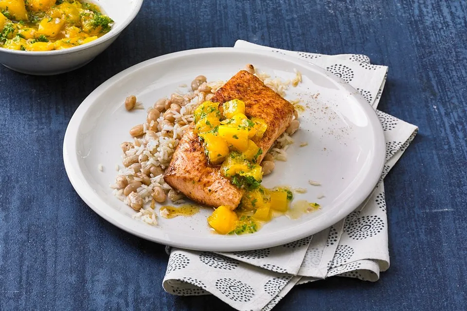

Karibischer Lachs mit Mangosalsa

Lass dich entführen in die Karibik! Unser Karibischer Lachs mit Mangosalsa vereint zartes, gewürztes Lachsfilet mit einer frischen Salsa aus süßer Mango, Zwiebeln und Kräutern. Ein exotisches Geschmackserlebnis, das deine Geschmacksknospen verzaubern wird.
Zutaten:
Gericht:
- etwas Olivenöl
- 200 g Reis
- 2 Dose/n Bohnen, weiße
- 2 Lachsfilet(s)
- 1 Zwiebel(n)
- 2 EL Limettensaft
- etwas Petersilie, gehackte
Marinade:
- 1 TL Kreuzkümmel
- ½ TL Curry
- ¼ TL Cayennepfeffer
- ½ TL Pimentkörner
- ½ TL Zimt
- ¼ TL Salz
Zubereitung:
Reis im Hintergrund gar kochen.
Bohnen abtropfen lassen und in einer heißen Pfanne (mit Deckel) aufpoppen lassen.
Die Gewürze in eine Kaffeemühle geben und zermahlen oder mit einem Mörser zerstoßen.
Bohnen aus der Pfanne nehmen und mit Salz und Pfeffer würzen.
Lachs abwaschen und den Rub darauf streuen.
Zwiebel fein hacken, Mango auch in sehr kleine Stück schneiden und zusammen mit Petersilie in einer Schüssel mischen. Salsa mit Limettensaft und Salz und Pfeffer abschmecken.
Kurz bevor der Reis gar ist, können die Lachsfilets gebraten werden.
Die Bohnen unter den Reis heben und zusammen mit dem Lachs und der Salsa servieren.